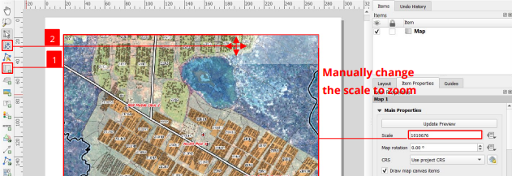
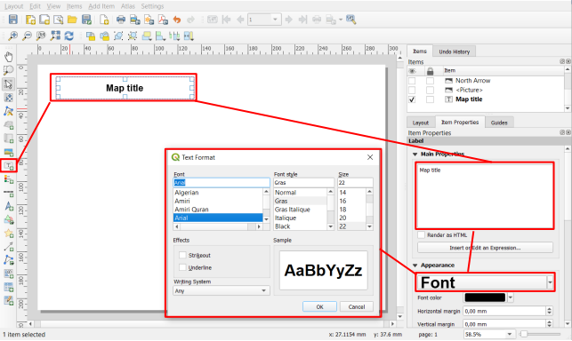
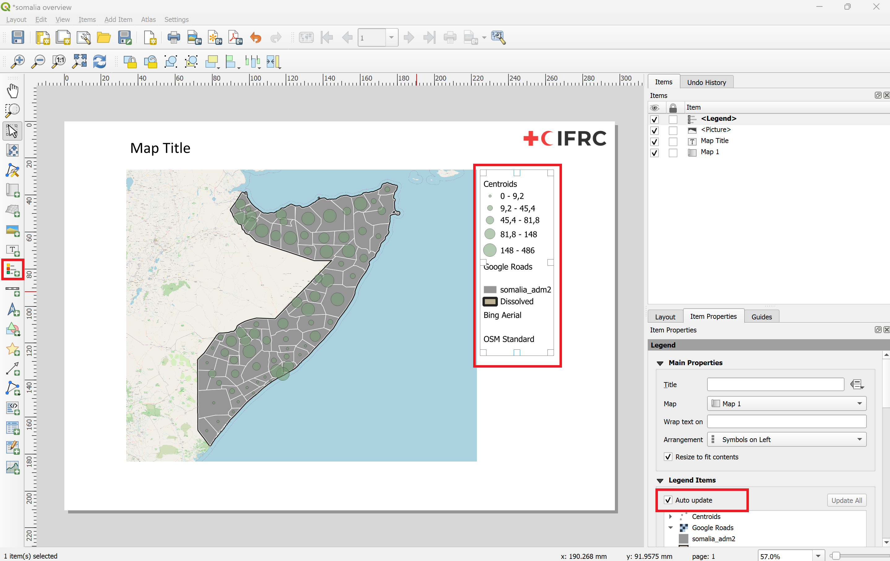
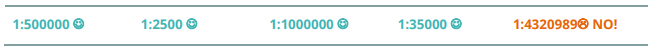
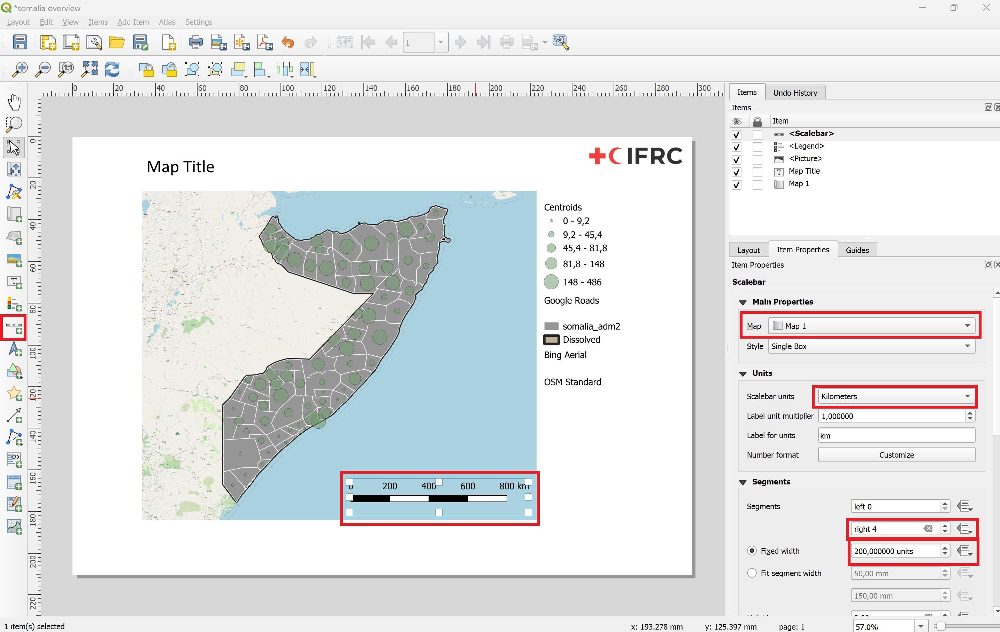
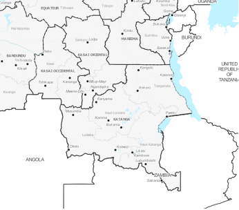
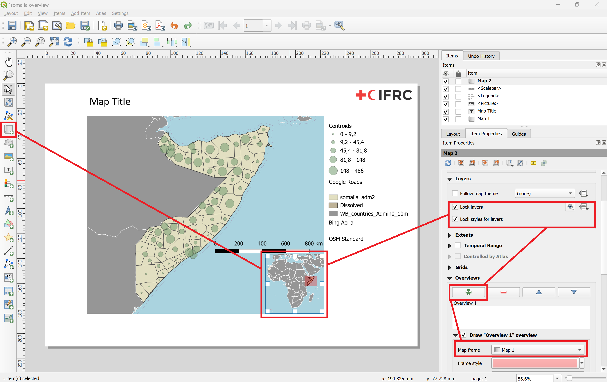
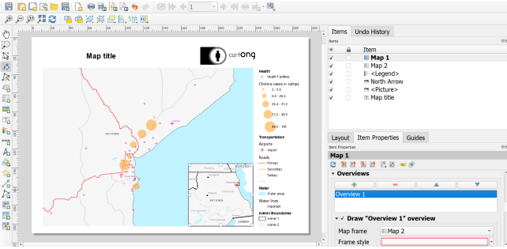

Map making Wiki#
Adding elements to the print layout#
Adding a new map#
Add a new map by clicking on the Add map button on the toolbar on the left and __drag a rectangle on the map canvas.
To move the map on the canvas, simply select the map and drag it with your mouse
To move within a map select Move item content button on the
To zoom in on the map, while using the Move item content button, you can Press CTRL + scroll the mouse wheel (gently) or enter the scale manually in the item properties
{kind=link}

Fig. 27 Adding a new map to the Print Layout#
Adding a title or a text box#
A title should describe the phenomenen represented on the map.
To add text (title, explanations), use the Add Label tool and draw a rectangle of the desired size.
In the Item Properties panel (on the right of your screen) you can enter your text and change the font, style, colour, etc. (_Remember to use the scroll bar in the window to see all the options).
{kind=link}

Fig. 28 Adding text to the print Layout#
Video: Adding a textbox
Adding an image or logo#
If you are working for an organisation, most likely you will add the logo of that organization on the maps you produce.
Click on
Add imagein the left toolbar.Drag a rectangle on the canvas.
In the
Item propertiestab, you will have the option to choose an SVG image from your SVG-library in QGIS or choose a Raster image. Most image files are Raster images.Select
Raster imageand click on the...to choose the location of the image.Your image will appear in the print layout. In order to make sure that the image does not get distorted, leave the
Resize Modeon “Zoom”.
Adding a legend#
Before adding a legend, make sure that:
All your layers have an explicit name (“rivers”, “primary roads”,…)
You use the final version of your map (no more layers to add, move, rename or modify). You can still modify them later but you will have to redo the legend.
To add a legend, you can use the add legend button on the left toolbar.
{kind=link}

Fig. 29 Adding a legend to the print layout#
In the item properties panel, if you keep the ‘Auto update’ option checked, new layers added to your project will automatically be added to the legend but you cannot control them individually (rename if necessary, reorder ot remove items).
Once the option is unchecked, you can update the name of the layers, group them, remove or reorganise them, etc.
If you have to many items on your legend, and they don’t fit on your map horizontally, you can also split the legend into several columns by navigating through the Item Properties-panel, expand the Columns-section and increase the Count.
Adding a scale bar#
Before adding a scale bar, select your main map and check in the Item Properties panel that the Scale fielld has a round number
{kind=link}

Fig. 30 Make sure that the scale is at a round number#
To add a scale bar, you can use the add scale bar button on the left toolbar. In the Item Properties panel, customize the following functions
Which Map is related to the scale
Unit system of the bar (metres, miles, degrees)
Segments on the left: segments shown before 0 m (always set to 0).
Fixed width: define the width of each segment (e.g. 1 km, 10 km, 50 km, …).
Height: height (thickness) of the scale bar
There are many other options to customize the scale bar (change the font, colours, etc.).
{kind=link}

Fig. 31 Add and customize the scale bar#
Adding an overview map#
Adding an overview map in the corner of your map will help locate the area you are viewing on the main map.
To create an overview map, you need to follow these steps:
Prepare a layer with national or subnational borders or important landmarks in your project (e.g: Administrative boundaries, Capitals)
Insert the overview map into your print layout (in the bottom right corner for example)
Lock the new map in the Item properties panel
Add a rectangle to display the extent of your main map
Go to the properties of your Main map > scroll down until you see “Overviews”
Add an Overview by clicking on the “+” icon
Link the main map by selecting it in the “Map frame” option
{kind=link}

Fig. 32 An overview map should show important landmarks and borders#
{kind=link}

Fig. 33 Add an overview map and lock the layer#
{kind=link}

Fig. 34 Add a the extent of the main map to your overview map (the red rectangle on the overview)#
Video: Setting up an overview map
Caution
This method requires you to be sure that you are not going to modify the oveview map, as once the layers are locked, they will keep the style, and any updates will not affect the overview map.
Exporting the print layout#
Once you are finished with the map composition, it is time to export export the print layout as a PDF or SVG file.
On the Toolbar click on the
Export as PDF-button.Give the new file a name and select the location you want to save it.
Click on
Save.A new window “PDF Export Options” will open. Here you can adjust the compression algorithm. For the best results, select the lossless image compression.
Click
Saveagain.A new green bar will pop up underneath the toolbars. Click on the file link to review the exported map.
Note
Make sure to check the map after exporting the PDF as some design elements might have changed in the exporting process.
Map templates#
Once you are satisfied with your map layout, click on the -symbol to save it as a new template.
Choose a location where you want to save the template. Ideally, you should choose the template directory (see tip).
Click
Save.You can open the template by dragging it into a QGIS-project.
You can drag and drop template-files (.qpt, QGIS template file) into QGIS or use the Layout manager.
Open the Layout manager under
Layout>Layout ManagerNavigate to the section “New from Template”
Choose
Specificand select the location where you saved your templateClick open.
The template directory is where QGIS is looking for layout templates. If you have templates saved here, you can load templates directly through the layout manager without selecting the file.
On windows, the file path is \Users\AppData\Roaming\QGIS\QGIS3\profiles\default\composer_templates.
On mac,
Tip
The layout manager in QGIS already has a dedicated location for map templates. On windows, the file path is \Users\AppData\Roaming\QGIS\QGIS3\profiles\default\composer_templates.
On mac,
If you save templates here, you can load templates directly through the layout manager without looking for the file.
You can also add file paths in the QGIS-template setting
Generate an Atlas#
An Atlas will generate a new page with the same map layout for each feature in a layer. For most purposes, it useful to first create a map layout with the elements such as legend, sources and overview map and then insert the map item that will be controlled by the Atlas. To generate an Atlas:
Click on the Atlas Settings icon in the Atlas Toolbar
In the new window, activate the Generate an Atlas option
Select the Coverage Layer. This will determine the features or polygons that will be displayed on a page. In our example, we will use the subnational administrative districts in Nigeria (
Adm1).Select the Page Name. This should be the name of the subnational district or location that is displayed on that page. To display the name of the district, we will choose
ADM1_REF.Now let’s add a map to the empty print layout.
Click on the map and navigate to the Layer Properties window on the right.
Scroll down until you see the option
Controlled by Atlasand activate it.Now activate the preview of the Atlas in the Atlas Toolbar. Otherwise, the print layout will not update to show you the atlas page. You can click through each page to see how it looks. Depending on the amount of features on your map, they may take a while to render.
Now you can adjust the Margin options to best fit the readibility of the map. By default, it is set to 10% and this should fit most purposes.
Before printing or exporting the atlas make sure to check every page that other elements of the map do not cover the represented region.
Note
For now the only item in the print layout that is being controlled by the Atlas is the Map we added. The other elements of the Map are the same on every page.
Video: Setting up an Atlas
Setting up Overview maps with an atlas#
Setting up Overview maps with an atlas works in the same way as setting it up for a normal map. As long as you select the Map controlled by the atlas as the map frame, it will update automatically.